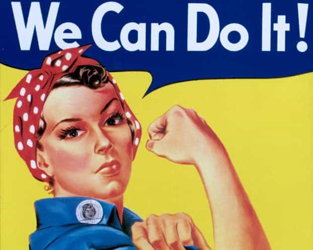
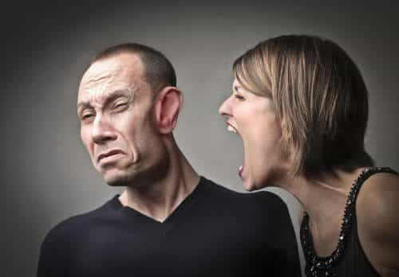

Although Game Of Thrones, at first glance, appears to be about war, blood, loyalty, family, and betrayal, a closer look will reveal that the entire cast is filled with alpha women tolerating weak, emasculated, orbiting, deformed, insane, beta males.
The women all have a vision to rule the Seven Kingdoms from the Iron Throne. The men are pathetic, with few exceptions. This complete role reversal from medieval-like times actually represented, when women gathered, cooked, and raised children while the men hunted and ruled, perpetuates the current trend of grrrl power and men-hatred that has metastasized throughout our entertainment industry.
The women

Cersei: Queen of the Iron Throne, for now. Rules her brother, who should be king. She joyfully kills all who cross her, and any innocents who may get in the way.
Daenerys: Queen of the Dragons and a bunch of other titles. She has some moral qualities like freeing slaves, and is the quintessential “cat woman” surrounded by her loyal, deadly dragons.
Olenna Tyrell: The true power behind the House Tyrell (while alive). Even at 80-some years old, she was far tougher than almost any man on this show.
Yara Greyjoy: Self-proclaimed commander of the 14 seas, usurping her brother and uncle. Gets more women than both combined.
Brienne: A six-and-a-half-foot tall mammoth woman who is loyal to a fault and tougher than almost any man on the show. She also kills men with ease.
Lyanna Mormont: A 10-year-old girl who makes grown men cower with fear with her ferocious onslaught of orders, common sense, loyalty, and honor. Any man would be proud to be half as tough as she.
Arya Stark: The second youngest alpha on the show and the toughest. On a mission to kill everyone who has harmed her or her family, including Cersei, who is probably the evilest person on the show.
Sansa Stark: Queen of the North. A natural leader. Grown men, including her older brother Jon Stark, listen to her advice and follow her commands.
Now the “men”

Samwell Tarly: The ultimate beta. He took in a Wildling, an unforgivable act to his family and his people, and is raising her son, who he allowed to be named after himself. This caused him to be excommunicated and disinherited by his father, a true alpha, who is not part of the show. Also, there is a fair chance that Samwell has impregnated the Wildling. We shall see.
Tyrion Lannister: The smartest person on the show, but he’s a dwarf. There is nothing wrong with being a dwarf. However, this is medieval times, and dwarves are called “imps,” and they are not respected. Tyrion has had to talk his way out of death many times, and his family tried to kill him.
Jamie Lannister: Made babies with his sister, who rules him as his queen. Doesn’t seem to have any interest in other women, despite being dashingly handsome. Also, only has one hand.
Theon Greyjoy: Tortured and neutered by Ramsay, Theon has gladly allowed his sister to rule him. During battle, he jumped ship instead of trying to save his sister.
Jorah Mormont: The ultimate orbiter. Banished by Daenerys so many times that she finally gave up and allowed him to return. A better example for the friend zone has never been found.
The Hound: A big bad-ass, true. But, he’s deformed, afraid of campfires, and was almost killed by a little girl.
The Mountain: One of the fiercest men in the kingdom. But he’s the queen’s slave.
Varys: Neutered and loyal only to himself. And homosexual. Game of Thrones almost refuses to allow any man to be what that society would consider “normal.”
Littlefinger: Sold Sansa, a teenager, to Ramsay. Then tried to have sex with her. Some might call this an alpha move, but he sold a virgin to a twisted psycho and then tried to get sloppy seconds from her afterwards, despite their 20-plus year age difference. Pathetic.
Ramsay: Dead now, but a twisted, evil torturer who loved to watch people burn, get skinned, and get eaten alive by his dogs. Probably the most hated character on the show, rivaling only Joffrey.
The list isn’t complete, but I’ve made my point: under the guise of warring families ruling for control of the known world, the show is actually the ultimate example of bossy women controlling pathetic men. War, blood, battles, and breasts are thrown in as a distraction to keep the men who are watching distracted from the fact that their very essence of manhood is being subliminally evaporated by a society that celebrates beta males supplicating to frigid females.
Game of Thrones (GOT) isn’t the only show where you’ll find this current trend of go-girl writing. Or of Athena-like women displaying amazing powers. Atomic Blonde, Wonder Woman and Kidnap are recent examples of attempts by the industry to capitalize on the trend. If you want to see weak men, you only need to head over to Silicon Valley and take your pick. Big Bang Theory is beta male paradise.
Or, watch Chris Pratt’s character, in Passengers, wake up Jennifer Lawrence (who has higher-level access to everything, of course) ninety years early because he’s lonely. Stop fast-forwarding for a minute, watch almost any commercial featuring a married couple, and you’ll quickly see a stupid man being berated by a bossy woman.

Weak men are literally everywhere in entertainment. This misandry has become our new zeitgeist, and it’s not getting better. We need more male characters with qualities like Jon Snow from GOT, who risked his life refusing to bend a knee to Daenerys, and John Wick, who calmly killed the enemy while dressed to the nines. Our newest hero, Roland, from The Dark Tower, is caught in an eternal battle against someone way tougher than he.
I long for the days when men like Eastwood, Stallone, and Schwarzenegger ruled the screen. Or Segal, Van Damme, and Snipes. These men were pure alphas who took no shit from any man or woman, and, more importantly, lived in a society where that was accepted.

Unfortunately, today we live in a society that is in its heyday celebrating the beta male.
For now.
Read More: How Feminism Is Ruining “Game of Thrones”